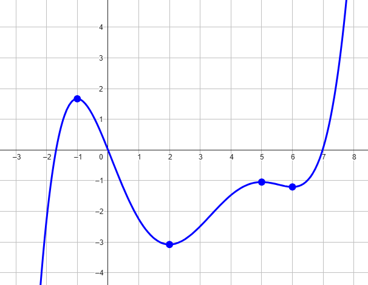
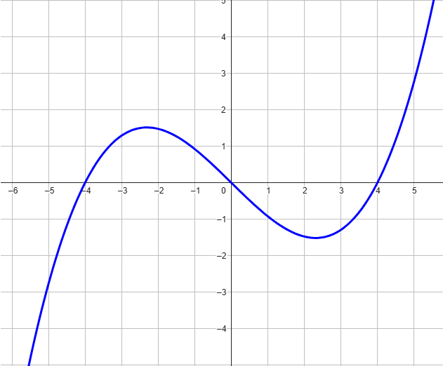

Consideriamo la funzione \(f\) rappresentata nel seguente grafico

Stabilire se le seguenti affermazioni sono vere oppure false.
Motivare la propria risposta.
-
La funzione \(f'\) è positiva per \(x \in (-1\,,\,\,2)\)
-
La funzione \(f'\) si annulla per \(x = 0\).
-
La funzione ammette massimo assoluto in \(x = -1\)
In figura è rappresentato il grafico della derivata della funzione \(f\).

Stabilire se le seguenti affermazioni sono vere oppure false.
Motivare la propria risposta.
-
La funzione \(f\) è crescente per \(x \in (0\,,\,\,4)\)
-
La funzione assume massimo locale per \(x = 0\)
-
La funzione \(f\) è decrescente per \(x \in (-5\,,\,\,-3)\)